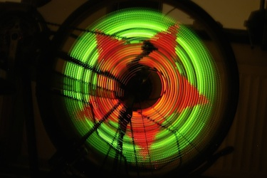
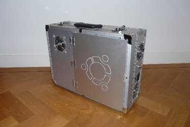
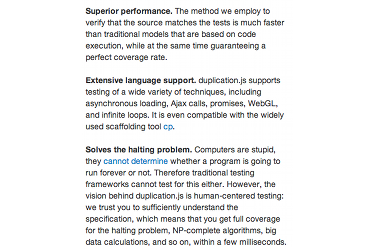
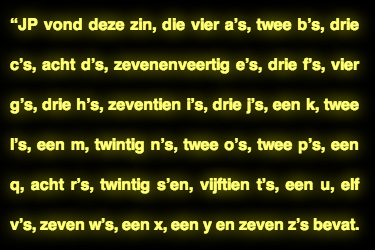
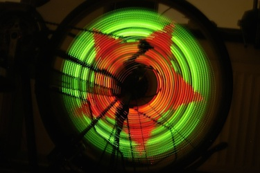
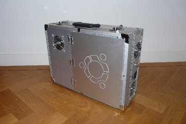
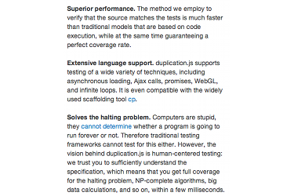
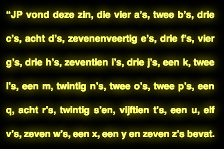
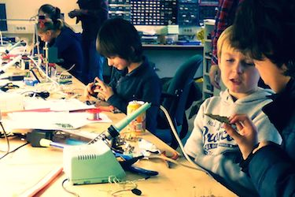
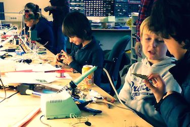

 


In 2008 I made an instrument out of wine glasses. I took some pictures of the Glass harp construction , and some videos, Auld Lang Syne and Sound of Music . They were seen by two artists who were hired by MTV to create a video with glass harps, and they ended up using my instrument, in Make a big effort to sound like MTV .
I also like to play the piano, and occasionally record it: Jerry Martin — The Simple Life ; Legend of Zelda ; Philip Glass — Mad Rush ; Philip Glass — Metamorphosis Three ; Linkin Park — Numb ; Pokémon — Elite Four ; and Metal Gear Solid 2 .